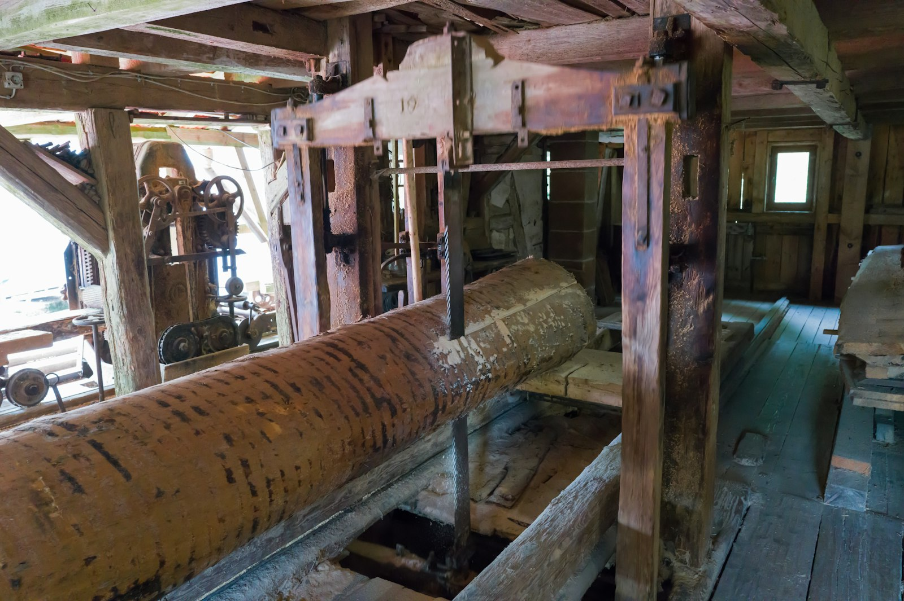

Nine jobs the mill does
Rates ex VAT. "While you wait" means under 20 minutes at the saw.
Two people run the mill: a 1.1 m band mill for logs, a rip saw, a 400 mm planer-thicknesser and a four-sided moulder. Book log milling a week ahead.

- Widest planing
- 400 mm
- Biggest log
- 1.1 m × 5 m
Cross-cut to length
£0.60 per cut
Minimum — · While you wait
Free on boards bought here when you take the offcut.
Rip to width
£0.95 per linear metre
Minimum £12 · While you wait (under 20 boards)
Saw kerf 3 mm.
Straight-line edge
£0.55 per linear metre
Minimum £10 · While you wait
One true edge for gluing or ripping at home.
Plane all round (PAR)
£0.85 per linear metre, up to 200 mm wide
Minimum £20 · 2 working days
Takes 5 mm off thickness and width: 27 mm sawn becomes 22 mm.
Plane wide boards
£1.40 per linear metre, 200–400 mm wide
Minimum £25 · 2 working days
Widest planer: 400 mm.
Resaw (bookmatch)
£1.60 per linear metre
Minimum £20 · 3 working days
Board up to 300 mm tall on edge.
Mould to profile
£2.40 per linear metre, plus £45 set-up
Minimum £65 · 5 working days
Fourteen profiles in stock: skirting, architrave, cladding, sill.
Feather-edge cladding
£1.10 per linear metre
Minimum £30 · 2 working days
From larch, cedar or chestnut boards.
Cut a slab from your log
£95 per hour on the band mill
Minimum £95 · Book a date
Logs to 1.1 m across and 5 m long. Nails and stones charged at £25 a blade.